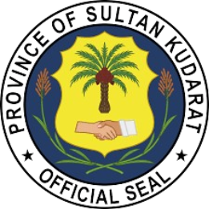

Leadership and Governance
The Province of Sultan Kudarat is governed by a local provincial government that ensures the delivery of public services and promotes development across its municipalities and communities.
The province is headed by a Governor, supported by the Vice Governor and members of the Sangguniang Panlalawigan (Provincial Board).
Leads the province and implements programs and services.
Supports the Governor and presides over the provincial board.
Creates laws and policies to improve the province.
Sultan Kudarat is composed of 11 municipalities and one city, each governed by elected mayors, vice mayors, and councilors.
Did you know? Tacurong City serves as the main commercial center while Isulan is the provincial capital.
The provincial government provides healthcare, education, infrastructure development, and environmental protection.